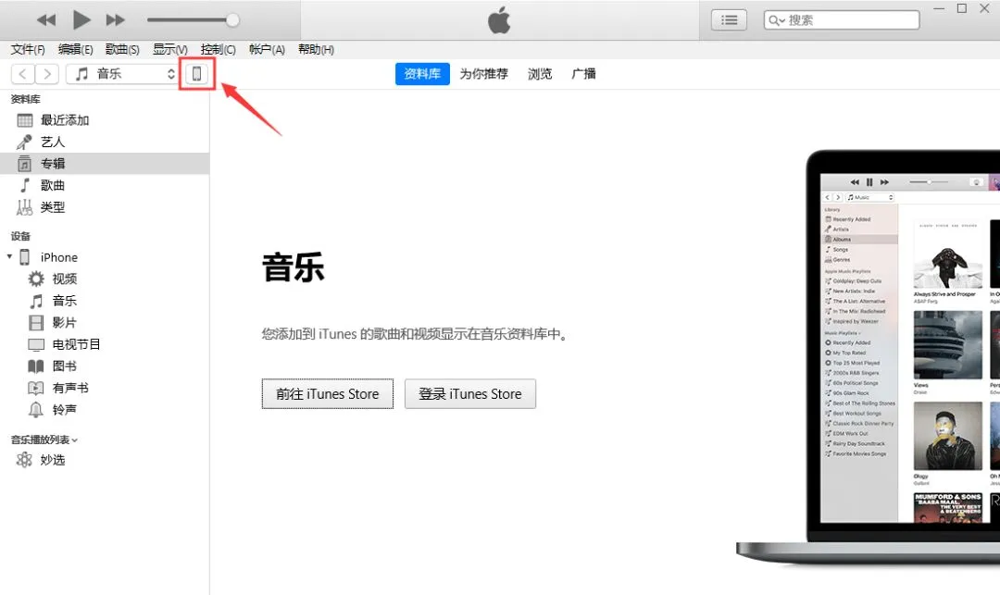
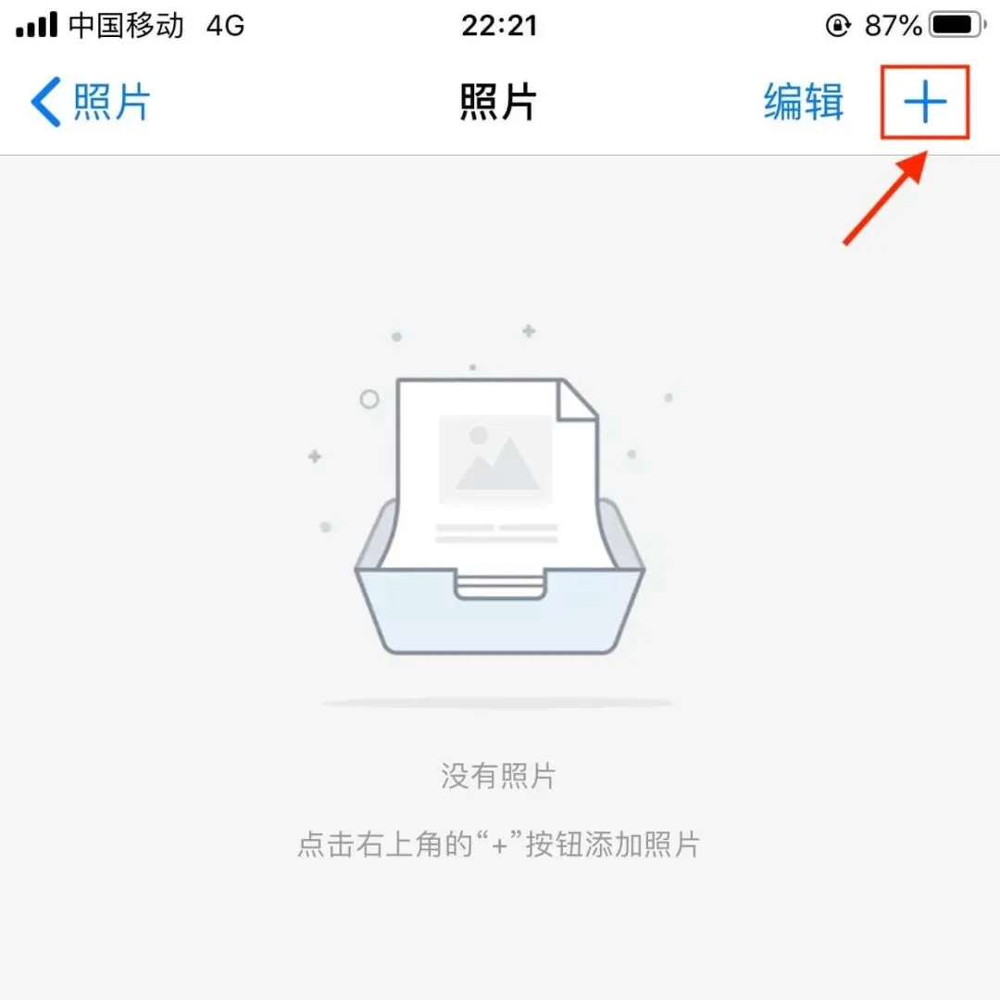
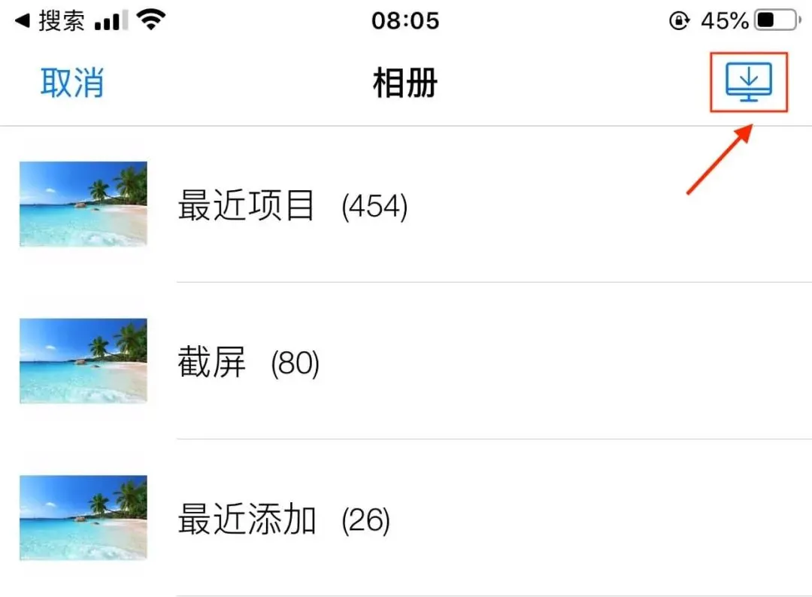
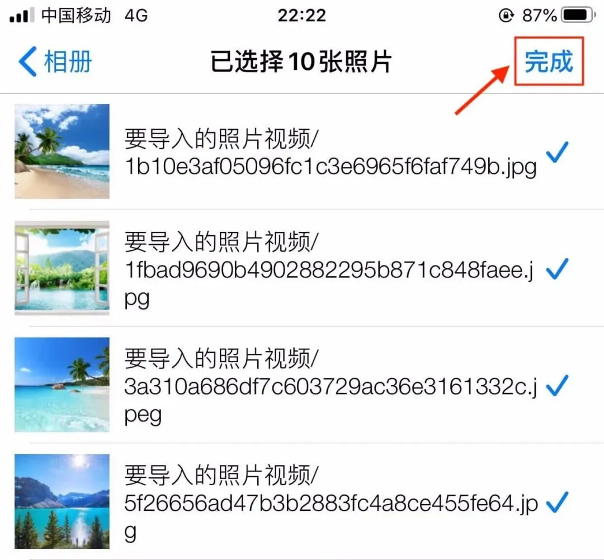

如何从电脑导入照片、视频
-
打开电脑的iTunes（如未安装iTunes，请先下载并安装iTunes）。 -
使用数据线将您的iPhone连接到电脑，并信任此电脑；然后在iTunes中点击“设备图标”按钮。 
-
在左侧边栏中，点击“文件共享”，然后选择中间“相册管家”App，将文件或文件夹拖放到右侧的“文稿列表”中即可。
您也可以在右侧“文稿列表”的右下角点击“添加”按钮，找到您要从电脑拷贝的一个或多个文件，然后点按“添加”。

-
打开“相册管家”App，选择一个相册，进入相册列表，点击右上角的“+”按钮，如图所示。 
-
点击右上角的“电脑导入”的按钮，如图所示。 
-
进入导入数据界面后，选择要导入的照片、视频，点击右上角的“完成”按钮即可。 